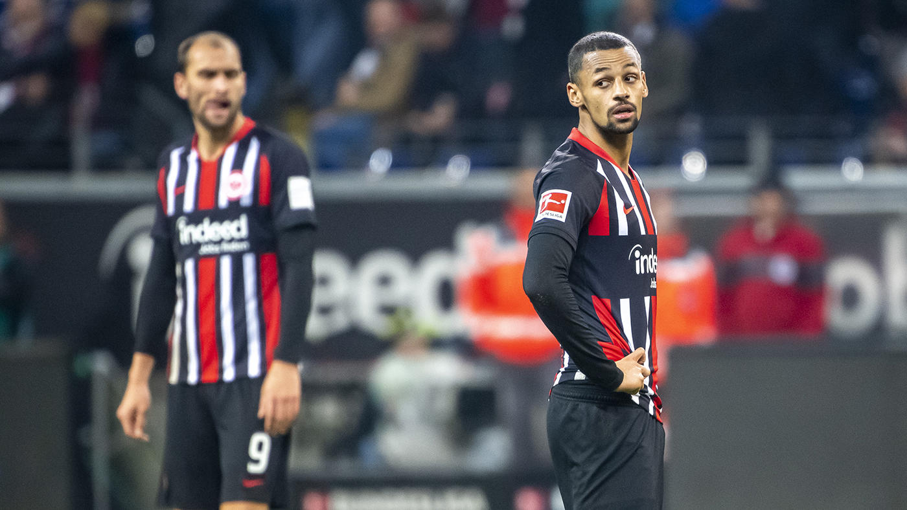

Final Score: Eintracht Frankfurt 1 - 3 Borussia Monchengladbach
Two very early goals and a penalty sealed the win for the visitors, and even though Frankfurt tried to come back through an Andre Silva wonder-strike. Here are five key takeaways from today’s match:
1. Monchengladbach’s Title Hopes Still Very Much Alive
Fighting for their first title since 1977, Gladbach has done an excellent job of keeping the pressure alive on the Bundesliga title race, having built an incredible group of players over the past few seasons and new manager Marco Rose bringing the best out of the ex-Lille forward and son of French legend Lilian Thuram, Marcus Thuram. The Frenchman continues his hot run of form, with Alexander Plea and a completely reborn Breel Embolo, and they might have a good chance in succeeding the next hurdle at Havertz and Co. in Leverkusen. With Bayern facing Union Berlin and this Frankfurt team next, and Bayern being Bayern, it might be hard to imagine them clinching the league title, but we can be sure if any unexpected mistakes were to happen, they very well could be on their way to their first since ‘77. That would be another milestone for the brilliant Marco Rose, who today is the manager is the most points since 26 games after taking charge.
3. Frankfurt and their Goalscoring Woes
Frankfurt seemed out of the game since the beginning and while their defense was completely sloppy today, with the exception of Hinteregger’s amazing goal-line clearance. They gave the opposition a lot of space to utilize, but another major gap left is perhaps a harder one to fill, one in their attack. They lacked a direction and determination to score until the last 15 minutes with the introduction of Gacinovic, and it was just a onsolation effort rather than a one that would win you a match.
With last season’s stars, Ante Rebic, Luka Jovic, and Sebastian Haller lured away this past summer, the heights of last season look more and more distant as days go by. With Kostic being the shining knight in the attack for Frankfurt this season, relying on just him is too much of a gamble and like today, when he doesn’t step up like the entirety of the first half and the beginning of the second half, the Frankfurt attack is just, non-existent.

4. Eintracht Frankfurt Faces Uphill Battle to Stay in Bundesliga
With Frankfurt just being six points shy of the relegation zone, and their incredibly lackluster display today afternoon, they are in a dangerous position with still eight rounds of play remaining in the Bundesliga. From European heartbreak at the Europa League last season to getting relegated from the Bundesliga, that is a very hard fall. With a rising tally of losses and a disappointing performance at home, going to Munich next weekend to visit the Rekordmeister won’t be a pleasant day, and could possibly be disastrous for their top-flight hopes.
Even if they survive, they have to fix the gaping holes in their attack and make sure sloppy defensive performances will be as consistent as their performances this season, beating Bayern earlier but losing to teams they shouldn’t. Unless they pull a second miracle against Bayern, they might be heading down from almost European glory to almost Bundesliga.